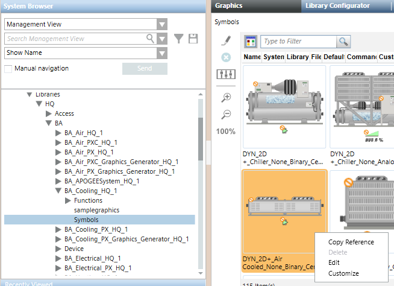
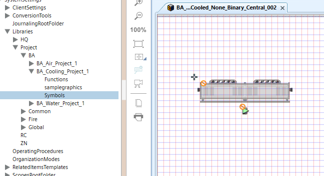
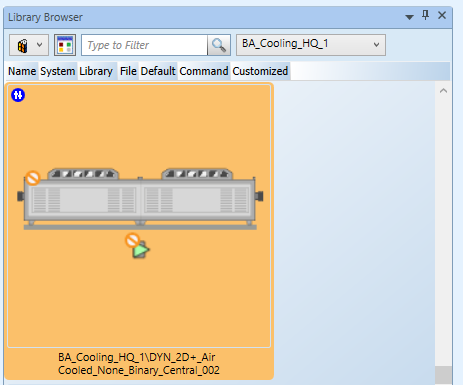
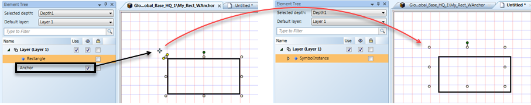
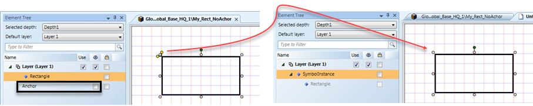

Symbol Basics
In its simplest form, a Symbol is a graphic made up of drawing elements on the graphic canvas in the Graphics Editor. Each drawing element has a series of associated properties that can be used to customize the look and behavior of the element.
In practice, a Symbol is a reusable graphic image that represents a piece of equipment, floor, or any component or entity. A Symbol can also represent a command on a graphic.
A Symbol is stored in a library and is typically used to display system object values. Symbols can be associated with one or more object types in the Models and Functions application and bound to object type properties to create substitutions in your graphics that provide a dynamic, visual representation of changing values from the system.
Symbols placed on a graphic are called Symbol instances. When a Symbol is placed on a graphic that has been associated to an object type, the Symbol instance displays the system object values in Runtime mode and in the Graphics Viewer. Animation is supported through a series of graphics.
Pre-defined symbols are stored in the Library folders of the Management View. These symbols are visible and editable from the Graphics Library Browser. Advanced users create their own Symbols.

NOTE:
You can only create, edit, and delete Symbols in the Graphics application if you have Create level access for the Graphics Library Browser. Create level access is defined in the Security application.
Symbols and Symbol Instances Explained
When you drag a Symbol onto a graphic you are placing an instance or a copy of all the elements and substitution properties associated with the Symbol onto that graphic. The exception is that any layers in the original Symbol are removed from the instance. The Symbol on the graphic is referred to as the Symbol instance.
When you save a graphic that has a Symbol associated with it, only the referenced Symbol and the associated properties are stored. If a change is made to the Symbol, it is reflected in the graphic in Runtime mode.
A Symbol instance can be resized, repositioned, and rotated via the context menu that displays when you right-click on it. These changes only affect the Symbol instance on the graphic, not the actual Symbol stored in the Library Browser. The Symbol stored in the browser is sized according to the elements it is composed of.
Symbol Versus Symbol Instance Attributes
Symbols versus Symbol Instance | |
Symbol | Symbol Instance |
Composed of drawing elements and images. | Occurrence of an existing Symbol on a graphic page. |
Has a name and is stored as a XAML stream. | Transparent by default. |
Supports background color. | Has no layers. Removes any existing layers. |
Can have layers. | Use scale factor to resize. |
Can contain other Symbols (nested). |
|
Can’t be resized. |
|
Symbol Libraries
Symbols are stored and sorted into Library blocks. These libraries are imported with the extension modules used when the project was created. You can view the Symbols in the Library Browser, which you can display from the Ribbon’s View menu.
Selecting a library in the Library Browser lists all the Symbols contained in it and a filtering field allows you to display a subset of specific Symbol types.
For more background information, see Library Browser - Graphics Editor.
Symbol Naming Conventions
Symbols stored in the libraries are sorted by discipline and then the various attributes associated with the Symbol. The Filter option in the Symbol Library Browsers, allows you to search on any part of the Symbol name, such as: BA, Inverted, Fan, or Sensor.
Symbols can be static (STA), dynamic (DYN), or named according to a room controller type, for example (TRA).
Anatomy of a Symbol Name
The table below breaks down the naming convention used for a particular Symbol. In this example, STA_3D_Detector_Ceiling_None_Horizontal_001 is from the Fire_Detection_HQ library:
STA_3D_Detector_Ceiling_None_Horizontal_001 | |
Attribute | Name |
Type | STA |
Style | 3D |
Equipment | Detector |
Function | Ceiling |
Definition | None |
Direction | Horizontal |
Number | 001 |
Replacing a Symbol in a Symbol Instance
You can replace a Symbol instance by selecting it on the graphic and replacing it with a selected Symbol from the Symbol library browser. The object type and substitution associations are retained. For example, you can replace a fan symbol with a pump symbol on a graphic without losing any of the values you want to display in the graphic.
A Symbol associated with a Function type, can be associated with a specific Style, so that when that style is selected in the Symbol style filter, the default Symbol or default command Symbol associated with that style type, displays on the canvas.
Symbol Customization
You can use the Symbol menu’s Customize option to make any necessary changes to a Symbol.
Customization implies that you are selecting an object and making a shallow copy of that object from a higher library level to a lower library level. Usually from the L1-Headquarter (HQ) level to a L2-Region, L3-Country, or most commonly to the L4-Project level.
Once you have saved the Symbol and copied it to the Function or Object Model, if applicable, and set the Style, the customized Symbol dynamically updates all the graphics where the original Symbol was used. Below are the basic steps for customizing an HQ Symbol for use in a Project level library.
- Clone or copy a Symbol by selecting Customize from in the Library from the Graphics Editor, Library Browser, or from an existing graphic.

- Edit the Symbol

- Copy the Symbol to the Function and set the Style to support automatic drag and drop object association.
- After restarting Desigo CC to initiate the change, the customized Symbol dynamically updates all the graphics where the original Symbol was used when it is in Runtime mode.
- In the HQ library where the original Symbol resides, a customized indicator now displays next to the Symbol, and if you hover over the Symbol, the path and dimensions of the new Symbol display.

Creating and Editing Symbols
New Symbols are created by selecting the Symbol 
You can edit an existing Symbol by right-clicking on it in the Library Browser and selecting Edit. This opens and displays the Symbol in the Graphics Editor.
NOTE: When working with Symbols that contain Pipe elements, if a Symbol is not the correct dimensions or size, you should rescale the Symbol to maintain the piping aspect ratio, rather than resizing it.
Symbol Reference Point
The top left corner of a Symbol is the default reference point for the Symbol on a grid.
When the anchor for the Symbol is set to visible in the Element Tree, it then serves as the reference point for the Symbol on the grid: the anchor on the Symbol is not visible by default but when set to “visible”, it serves as a Symbols reference point on a grid.

When the anchor is not visible (default) the top left corner of the Symbol is the reference point for the grid.

Alarm-Anchor Indicators
Alarms on a graphic are displayed differently in the Desigo CC Graphics Viewer management station and the Flex client.
- Management station – Alarms are displayed in the Status and Commands window on the graphic and in the Operations and Extended Operations tabs. You do not need to configure the Status and Commands window for the management station.
- Flex Client – By default, Alarm indicators display in the top-left corner of a Symbol that is in alarm. In a nested Symbol, any alarms in the child Symbols are displayed in the parent Symbol. The placement of the alarm indicator can be customized during Symbol engineering.
Customizing an Alarm Indicator for the Flex Client
During the engineering of a Symbol, you may want to specify the point where the alarm indication is actually placed in the Flex Client. To do this, you can create an Alarm-Anchor using one of the drawing elements and then placing it in the area you want it to display in runtime. Typically, the ellipse element is used for this. The element’s Description text, must contain the text Alarm-Anchor. The text is not case-sensitive.
The alarm indicator also uses the element’s Layout > X and Y properties as the starting point to position the alarm-indicator. The alarm-anchor element must be in the parent layer of the Symbol, and not part of a Group.
For step-by-step, see Customize the Alarm Placement on a Symbol.
Static Symbols
Symbols are not required to have object type associations or substitutions. A static symbol, for example, is not associated with an object type, nor does it have any substitutions. The value of the static symbol cannot change. Typically, this type of symbol is used for representing symbols and used in multiple graphics. You can nest a static symbol within another symbol. In the animation element, however, the substitution default value is always used.
NOTE:
You can only create, edit, and delete symbols in the Graphics application if you have Create level access for the Graphics Library Browser. Create level access is defined in the Security application.